jakub.kr/skills가 뭔가요
jakub.kr은 디자인 엔지니어 Jakub Krehel의 개인 사이트예요. 발표자는 처음에 .kr 도메인을 보고 한국 사람이 만든 줄 알았대요. 알고 보니 이름 Krehel의 앞 두 글자가 kr이라서 산 도메인이었어요.
프로필 첫 줄에는 Interfere라는 회사의 founding design engineer라고 적혀 있어요. 아래 Projects 목록의 맨 끝, /skills(Skills for design engineers)가 이 영상의 주인공이에요.
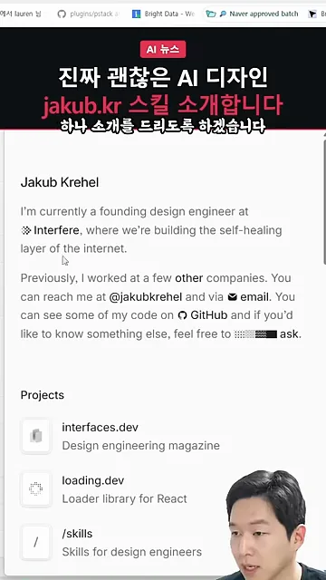
/skills 페이지는 '애니메이션과 UI 다듬기부터 접근성, 제품 문구까지 인터페이스 만들기를 돕는 에이전트 스킬 모음'이라고 자기를 소개해요. 가운데 회색 칸에 설치 명령이 한 줄 있어요. 발표자는 AI에게 이 스킬을 설치해 달라고만 하면 된다고 말해요.
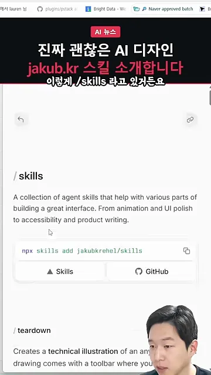
npx skills add jakubkrehel/skills상태를 펼쳐 보고, 고르고, 뜯어보는 스킬
페이지 맨 위의 teardown은 물건의 기술 일러스트를 그려 주는 스킬이에요. 발표자는 쓸 일이 없다며 넘어가고, 화면 작업에 바로 쓰이는 스킬부터 보여 줘요.
state-machine: 모든 상태를 한 페이지에
웹사이트의 컴포넌트에는 상태가 아주 많아요. state-machine은 고른 컴포넌트의 모든 상태를 임시 페이지에 목 데이터와 함께 띄워 줘요. 위쪽 검은 드롭다운이 상태 스위처예요. Connection, Data, Access 세 묶음 아래 Connected, Setup incomplete, Syncing, Error, Auth expired 같은 상태가 나열돼 있어요.
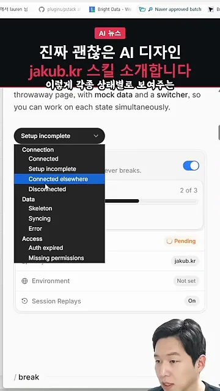
Error를 고르면 상태 줄에 빨간 Sync failed가 뜨고, 가운데에 Couldn't load settings 안내와 Try again 버튼이 나와요. 발표자는 이렇게 모든 상태가 다 깔끔하다는 점을 칭찬해요.
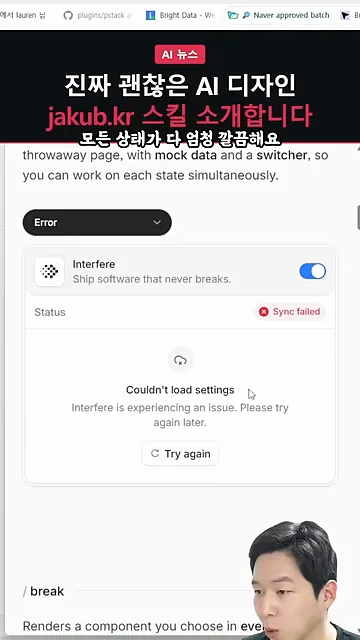
break: 극단적인 상황에 넣어 보기
break는 컴포넌트를 온갖 상황에 넣고 버티는지 시험해요. 예시 카드 위쪽 화살표로 Unbroken text(줄바꿈 없는 긴 문자열), Loading 같은 상황을 넘겨 볼 수 있어요. 아래 Before와 After 버튼으로 고치기 전후를 바꿔 볼 수 있다는 게 발표자 마음에 들었던 점이에요.
explain-interface와 variant
explain-interface는 웹의 어떤 UI(User Interface)가 어떻게 만들어졌는지 설명해 줘요. 화면의 예시 질문은 interfaces.dev의 Copy Page 버튼 애니메이션이에요. 답에는 0ms·300ms 시간축이 그려져 있어요. 아래 exit/enter 상자에는 나가는 아이콘이 opacity 1→0, scale 1→0.25, blur 0px→4px로 사라지고 들어오는 체크 표시는 반대로 나타난다고 적혀 있어요.
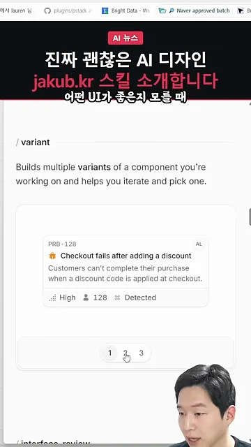
variant는 어떤 UI가 좋을지 모를 때 쓰는 스킬이에요. 같은 컴포넌트의 후보를 여러 개 만들어 주고, 카드 아래 1·2·3 번호로 넘겨 보며 고르게 해요.
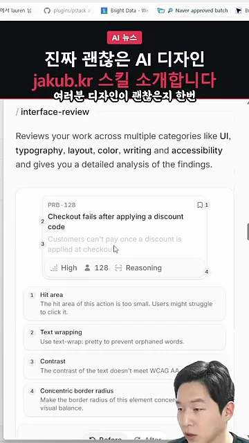
점검하고 고치기: interface-review와 better-*
발표자가 가장 많이 쓴 흐름은 두 단계예요. 먼저 interface-review로 디자인을 검사해 지적 사항을 받아요. 그다음 better-interface나 better-ui로 고쳐요. 마지막으로 AI에게 Before/After를 같이 보여 달라고 하면 차이를 눈으로 확인할 수 있다고 해요.
flowchart LR A["화면 만들기"] --> B["interface-review
지적 사항 받기"] --> C["better-interface
또는 better-ui로 고치기"] --> D["Before/After
같이 보여 달라고 하기"]
interface-review: 무엇이 문제인지 번호로
interface-review는 UI, 타이포그래피, 레이아웃, 색, 문구, 접근성을 한꺼번에 검사해요. 예시 카드 위에 번호 1~4가 붙고, 아래에 같은 번호로 지적 사항이 나와요. 1번은 클릭 영역(Hit area)이 너무 작다는 것, 2번은 고아 단어를 막으려면 text-wrap: pretty를 쓰라는 것이에요. 3번은 글자 대비가 WCAG(Web Content Accessibility Guidelines)의 'AA' 기준에 못 미친다는 것, 4번은 안팎 모서리 둥글기를 동심원처럼 맞추라는 것(Concentric border radius)이에요.
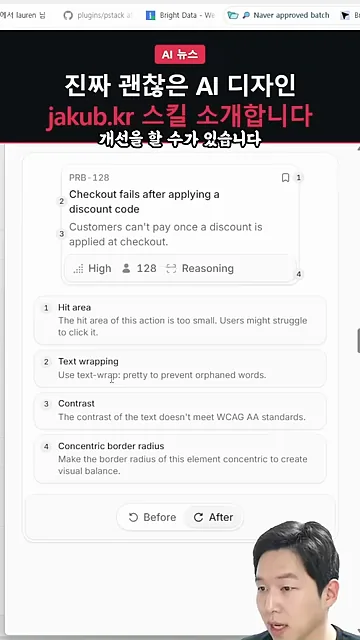
better-ui: 흔들리는 화면 잡기
better-ui 예시에서 발표자는 가운데 숫자를 가리켜요. Before에서는 숫자가 1,223에서 1,250으로 바뀔 때마다 글자 폭이 달라져서 아래 Follow 버튼 줄까지 흔들려요. After에서는 이런 흔들림을 잡아서 폭이 일정해요. 위쪽 Message 버튼 옆 아이콘도 하늘색 테두리로 다듬어졌고, 애니메이션과 클릭 효과도 적당히 들어가요.
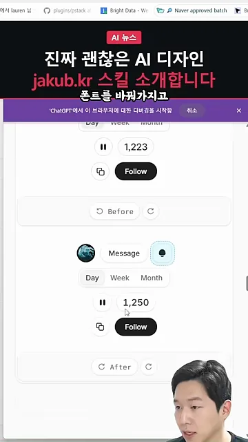
글자, 색, 접근성
better-typography 예시는 'More time building, less time fixing.'이라는 제목 카드예요. Before에서는 제목이 'less'에서 어색하게 끊기고, After에서는 'More time building,' 다음에 자연스럽게 줄이 바뀌어요. 발표자는 Before와 After를 보면 확실히 차이가 난다고 말해요.
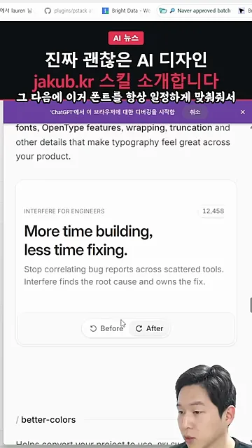
better-colors는 프로젝트 색을 OKLCH(OK Lightness Chroma Hue)로 바꿔 줘요. 화면 위쪽 네 알약은 같은 밝기와 채도에 색상만 30, 150, 250, 320으로 바꾼 OKLCH 색이에요. 아래 hsl 알약 네 개는 밝기가 제각각이라 서로 덜 어울려요. 발표자는 색을 서로 어울리는 조합으로 바꿔 준다고 정리해요.
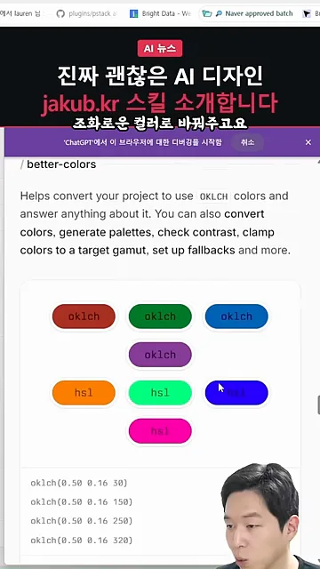
better-accessibility는 놓치기 쉬운 접근성을 챙겨요. 예시는 이메일과 비밀번호를 넣는 가입 폼이고, 위쪽에 'Oops! Something went wrong.' 오류 알림이 떠 있어요. 페이지 설명에는 포커스 상태, 키보드 탐색, ARIA(Accessible Rich Internet Applications), 스크린 리더, 클릭 영역을 다룬다고 적혀 있어요.
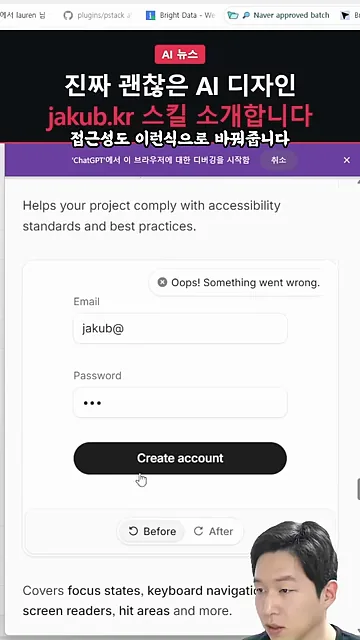
레이아웃과 문구
better-layout은 묶음, 정렬, 읽는 순서를 맞춰 줘요. Guides를 켜면 카드 위로 점선 안내선이 겹쳐 그려져서, 아바타와 제목과 아래 태그가 같은 선에 맞춰졌는지 확인할 수 있어요.
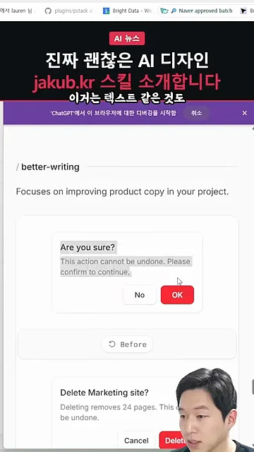
better-writing은 제품 문구를 다듬어요. 위쪽 Before 확인 창은 'Are you sure?'와 No/OK 버튼이에요. 아래 After는 'Delete Marketing site?'로 무엇을 지우는지 밝히고, 24페이지가 지워진다고 알려 주며 버튼도 Cancel/Delete로 바꿨어요. 발표자는 결과가 없을 때 보여 줄 화면도 만들어 준다고 덧붙여요.
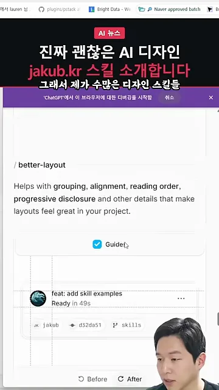
발표자의 결론
디자인을 개선해 준다는 스킬 중에는 AI 슬롭 냄새가 나는 게 많았대요. 이 모음은 Before/After만 봐도 만든 사람이 디자인을 아는 사람이라는 게 보였다고 해요. 발표자가 써 본 수많은 디자인 스킬 중 실제로 넣었을 때 효과가 있었던 모음이라, 바이브 코딩을 한다면 적용해 보라고 권해요.
특히 AI한테 요런 식으로 이 제이컵 스킬 적용한 비포 애프터 같이 보여 달라고 하면 확실히 차이가 느껴져요.
— 영상 01:40
| 스킬 | 영상에서 보여 준 일 | 영상 위치 |
|---|---|---|
| state-machine | 컴포넌트의 모든 상태를 스위처로 바꿔 보기 | 00:24 |
| break | 긴 텍스트·로딩 같은 상황에 넣어 시험하기 | 00:36 |
| explain-interface | 남의 UI 애니메이션을 수치로 풀어 주기 | 00:46 |
| variant | 후보 여러 개 만들어 고르기 | 00:52 |
| interface-review | 지적 사항을 번호로 받기 | 00:58 |
| better-ui | 흔들림 잡기, 아이콘·애니메이션·클릭 효과 | 01:07 |
| better-typography | 줄바꿈·크기 등 글자 다듬기 | 01:27 |
| better-colors | OKLCH로 어울리는 색 맞추기 | 01:35 |
| better-accessibility | 접근성 보완 | 01:39 |
| better-layout | 묶음·정렬 맞추기 | 01:51 |
| better-writing | 확인 창 같은 문구 다듬기 | 01:59 |